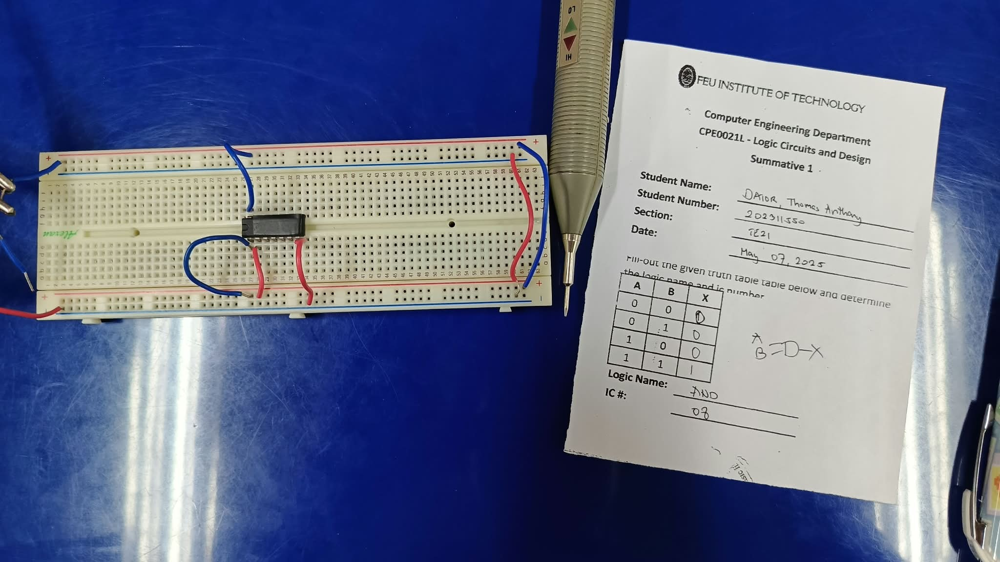
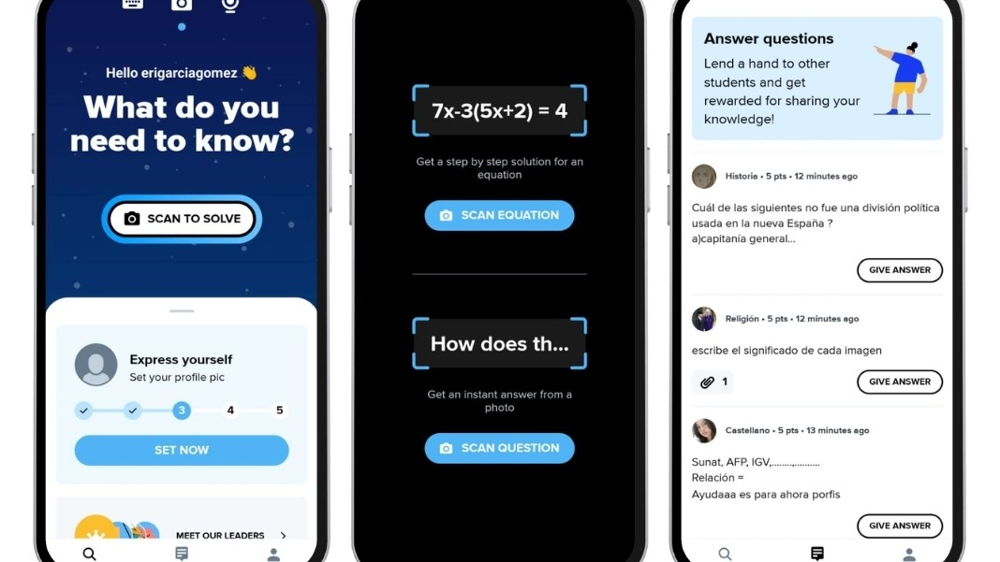
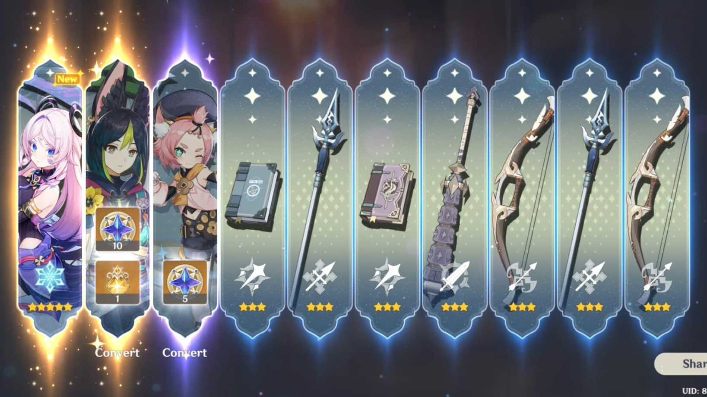

A personal journey through everyday ethical decisions.
This portfolio documents real moments from my life this semester when I had to think
about what the right thing to do was. For each one, I describe what happened, the values
that were in tension, and what the experience taught me about the person I want to be.
The beliefs and values that guide how I try to act.
Personal Ethics Manifesto
I am a person who lives by his own principles. I believe in karma and am easily guilted by my own actions and inactions. I value integrity, responsibility, and fairness, and I try to let these values guide the way I treat others and make decisions. I believe that being successful should never come at the expense of honesty, respect, or the well-being of others. When I make mistakes, and I often do, I want to take responsibility for them, learn from them, and become better rather than simply finding someone or something else to blame. As I continue to grow as a student, leader, and person, I want to remain open to learning from my experiences and questioning my own decisions. Ultimately, I want my actions to reflect not only what I am capable of achieving, but also the kind of person I choose to be.
My Three Core Values
Integrity
Doing what is right even when nobody is watching.
Responsibility
Taking ownership of my choices, actions, and their consequences.
Fairness
Treating people fairly while considering different perspectives and circumstances.
Moral Moments
Six situations from my own life. Each reflection follows the same structure:
the situation, the ethical conflict, the ethical lens, my decision, and what I learned.
Moral Moment 01
Inspiration for a History Poster
Looking at other people's work for ideas when I didn't feel confident in graphic design.
Moral Moment 02
Helping a Friend Before His Exam
A co-officer from a lower year asked what might come up in his practical exam, and I shared more than I should have.
Moral Moment 03
The Gossip I Didn't Stop
A friend guessed out loud about why someone we know broke up, and I let the conversation continue.
Moral Moment 04
Shortcuts During Online Classes
During the pandemic, I often relied on AI and online forums for answers just to get good grades.
Moral Moment 05
Losing My Temper Over a Game
I said hurtful things about a friend because her luck in a game was better than mine.
Moral Moment 06
The Wrong Price at the Bakery
A cashier told me a lower price than what I owed, and I corrected her.
My Moral Growth
Looking back on these experiences, I realized that ethics is not only about making big decisions, but also about the small choices I make every day. Each moment made me more aware of how my actions can affect other people, even when I do not immediately see the consequences. I learned that being ethical does not mean always being perfect; it means being willing to recognize my mistakes, reflect on them, and do better. Moving forward, I want to be more mindful of my choices and let my values guide me even in ordinary situations.
For a history project, we were tasked to make a poster presenting a timeline. Graphic design isn't one of my strengths, so before starting, I looked at other people's work to get ideas for how to lay out and design mine.
The Ethical Conflict
On one side was my need for guidance and my wish to turn in a decent poster despite my weaker design skills. On the other side were originality and respect for the people whose work I was looking at. The question was where learning from someone's design ends and copying it begins, and whether it was fair to submit something shaped by other people's ideas.
Ethical Lens
Principles: Integrity, Honesty, Respect
Integrity asks that the work I submit is genuinely mine. Honesty means not presenting someone else's creative choices as my own. Respect applies to the people whose posters I studied, since their effort and ideas deserve recognition rather than being taken without credit. Looking at examples isn't wrong in itself; it's how many people learn design. It becomes a problem only when inspiration turns into imitation.
Decision / Reflection
I used other people's work as a source of ideas while I made my own poster. I think this was an acceptable choice, because finding inspiration is a normal part of learning, especially in an area where I'm still developing. Looking back, the most ethical approach is to study several examples to understand what makes them work, build my own design from that understanding, and give credit if I ever borrow something distinctive from a specific person.
My Moral Insight
This experience taught me that… looking for inspiration isn't a weakness, but there is a line between learning from others and taking from them, and integrity means staying on the right side of it.

The Situation
During midterm season, a friend who is also a co-officer from a lower year asked me what might come up in the practical exam for his laboratory subjects. I sent him some information and relevant files.
The Ethical Conflict
I wanted to help a friend and fellow officer who was stressed about his exams. But helping him this way conflicted with fairness to his classmates, who didn't get the same information, and with the purpose of the exam itself, which is to measure what each student has actually learned. Being loyal to one person meant putting everyone else at a disadvantage.
Ethical Lens
Principles: Fairness, Justice, Beneficence
Beneficence explains why I wanted to help: I cared about him doing well. Fairness and justice require that everyone taking the same exam competes on equal terms, and specific information about what may come up gave him an advantage his classmates didn't have. Real beneficence would have meant helping him learn the material, not just helping him pass.
Decision / Reflection
I shared the information and files with him. Even at the time, I believed this gave him an unfair advantage. I still could have helped him without sharing too much, for example by explaining concepts he found confusing, reviewing lab procedures with him, or sharing how I prepared for my own practical exams. That would have supported him as a friend while keeping things fair for everyone else.
My Moral Insight
This experience taught me that… being a good friend doesn't mean giving someone every advantage I can. The most helpful thing is often to help them learn, in a way that is still fair to everyone else.
The Situation
During a conversation, a friend mentioned in passing some information about the relationship of someone we both know. She then started theorizing about why they might have broken up, even though neither of us knew what had actually happened. We both knew that sharing gossip like this was wrong, but I didn't stop her.
The Ethical Conflict
I didn't want to make the conversation awkward or seem preachy to my friend. At the same time, the person we were talking about deserved to have their privacy respected, and they weren't there to explain or defend themselves. Guessing about someone's breakup can easily turn into a rumor that people start to believe.
Ethical Lens
Principles: Privacy, Respect, Non-maleficence
A breakup is a personal matter, and privacy means the people involved get to decide who knows about it and what is said. Respect means not treating someone's private life as entertainment behind their back. Non-maleficence, the duty not to cause harm, applies because speculation can spread and hurt someone's reputation and feelings, even if we never meant it to.
Decision / Reflection
I didn't stop her and let the conversation go on. By staying silent, I became part of it. The most ethical response would have been to gently redirect the conversation, for example by saying that we don't really know what happened and that it isn't our business, and then changing the topic. It wouldn't have needed to be confrontational to make a difference.
My Moral Insight
This experience taught me that… staying silent is also a choice, and protecting someone's privacy can take as little as one honest sentence.

The Situation
During the pandemic, I frequently used AI and question-and-answer websites and forums to find possible answers for my schoolwork. I personally disliked online classes, and at the time, all I wanted was good grades.
The Ethical Conflict
I wanted good grades and a way to get through a period of school I found frustrating. That conflicted with honesty about whose work I was submitting and with my responsibility for my own learning. Grades are supposed to show what I understand, and relying on outside answers made them say something that wasn't fully true. It was also unfair to classmates who were doing the work themselves.
Ethical Lens
Principles: Honesty, Integrity, Responsibility
Honesty means the work I submit should reflect my own effort and understanding. Integrity means doing the right thing even when no one is checking, and online classes made it easy to go unchecked. Responsibility means owning my education, including the gaps in knowledge that shortcuts left behind.
Decision / Reflection
I relied on these tools often, mostly to get answers rather than to understand the lessons. I understand why I did it, since online classes were genuinely hard for me, but that reason doesn't make it right. The more ethical approach would have been to use AI and the internet as learning aids, such as asking them to explain a concept or checking my answers after trying on my own, while following my teachers' rules, and to ask for help when I was struggling instead of looking for shortcuts.
My Moral Insight
This experience taught me that… a grade is only worth something if it honestly reflects what I learned, and difficult circumstances are a reason to ask for help, not to cut corners.

The Situation
I once said negative things about a friend because my luck was worse than hers in a video game we played together. This led to her unfriending me, and rightfully so.
The Ethical Conflict
In the moment, my frustration and competitiveness took over. That conflicted with the respect and kindness I owe a friend. Her good luck wasn't something she controlled, and it had nothing to do with my bad luck, yet I made her the target of my feelings.
Respect means treating others with dignity, even when I'm upset. Non-maleficence applies because my words hurt her and damaged our friendship. Responsibility means recognizing that the real problem was my reaction, not her, and accepting the consequences that followed.
Decision / Reflection
I let my frustration speak for me and said things I shouldn't have, and it cost me the friendship. Looking back, my judgment was clouded and I could have handled the situation better. The most ethical response would have been to step away from the game when I noticed I was getting frustrated, remind myself that her luck wasn't her fault, and, once I had said something hurtful, offer a sincere apology without making excuses.
My Moral Insight
This experience taught me that… my emotions are my responsibility, and something as small as a game can damage a real relationship if I let frustration take control.
The Situation
After a gym session, I went to a bakery to buy some bread and calculated exactly what I had to pay. The cashier, however, told me a lower price. I corrected her and gave her the right amount.
The Ethical Conflict
Keeping quiet would have been easy, and I would have saved some money without anyone noticing. On the other hand, paying less than the real price wouldn't have been fair to the bakery, and if the register came up short, the cashier could have been the one held responsible for the mistake.
Ethical Lens
Principles: Honesty, Fairness, Integrity
Honesty means telling the truth even when a lie or silence would benefit me. Fairness means paying what I actually owe for what I received. Integrity, one of my core values, is about doing what is right even when nobody is watching, and this was exactly that kind of moment.
Decision / Reflection
I corrected the cashier and paid the right amount. I believe this was the right decision. The amount was small, but small moments like this are where honest habits are built, and it also protected someone who had simply made a mistake.
My Moral Insight
This experience taught me that… integrity shows most in small moments when no one would notice, and being honest is easier when it's already a habit.